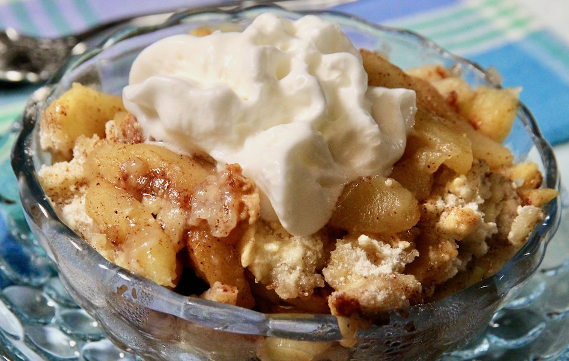

Easy Apple Cobbler

You will need:
6 large Granny Smith apples - peeled, cored and sliced
3 tablespoons white sugar
1 teaspoon ground cinnamon
1 cup all purpose flour
1 cup white sugar
1 large egg
1 teaspoon baking powder
1/4 cup water